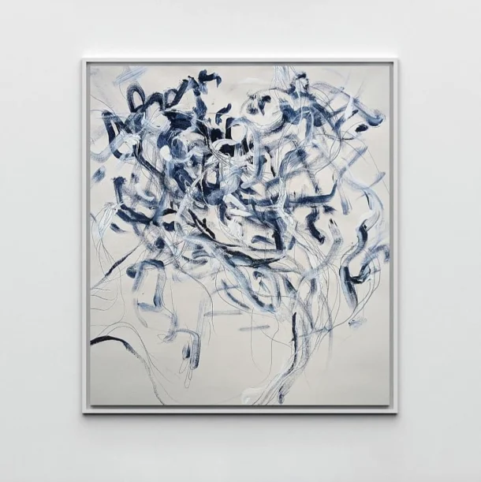

La creatividad usando la IA
¿Cómo la utilizan los artistas?
Miguel antonio Trujillo Rivas mayo del 2023
Diseño digital de medios interactivos de la UACJ, Cd. Juárez, Chihuahua
Ahmed Elgammal es profesor en el Departamento de Informática de la Universidad Rutgers, donde fundó un Laboratorio de Arte e IA. Él y su equipo han creado AICAN (red creativa antagónica de IA, por sus siglas en inglés), una GAN entrenada con 100 000 imágenes de cinco siglos de arte occidental.
Se programó para generar imágenes originales y diferenciadas, con influencia de movimientos artísticos previos.
En una entrevista con Domestika, Elgammal explicaba que crearon AICAN “para mostrar la capacidad creativa de la IA”, y para demostrar que “la IA puede usarse como un medio”.
Funcionó. En 2017, se dio una situación similar a la descrita al inicio de este artículo: varias personas vieron obras creadas por AICAN, junto con las de maestros del expresionismo abstracto y artistas contemporáneos.
Pasaron el test de Turing: el público no distinguía qué obras eran creadas por humanos y cuáles por AICAN.

Pero el equipo también aprendió algo. Jennifer Chang, colega de Elgammal y CEO de Playform (una herramienta para artistas desarrollada a partir de la tecnología de AICAN), explica a Domestika: “Un comentario que surgía con frecuencia [en la galería] era: 'me gustaría hablar con el artista.' El comisario decidió que debía haber un artista presente... y entonces fue cuando intervino Ahmed. Esto demuestra que la IA por sí sola no crea arte, porque el arte cuenta una historia. La gente quería que Ahmed les contara esa historia”.
Lo que quedó claro a partir de AICAN y de otros proyectos similares es que el arte (es decir, la originalidad) surge de decisiones tomadas por humanos, que expresan una historia única y condicionan el resultado de la herramienta.
Elgammal señala que es lo mismo que ocurre con la fotografía: “En el siglo XIX, se pensaba que, si todo el mundo usaba la misma cámara, ¿cómo se iba a distinguir el trabajo de una persona? ¿Había una personalidad artística en la fotografía que la convirtiera en arte?”
Cómo utilizan la IA los artistas contemporáneos
La IA afecta cada vez más al arte contemporáneo. Ya sea una herramienta como Playform o un algoritmo programado por el artista, estas son algunas de las formas en que los artistas trabajan actualmente con la IA.
1. Colaboración
Sougwen Chung es una artista multidisciplinar que combina los trazos hechos a mano con la colaboración del ordenador. Ha explorado, junto con varias generaciones de DOUG (unidades robóticas que generan dibujos), el potencial de la colaboración entre humanos y máquinas.
Su proyecto de mimetismo copiaba sus gestos en tiempo real, creando obras de arte llenas de ondas y ecos. La serie sobre la memoria partía de una gran recopilación de su arte, a partir de la que DOUG aprendía y creaba nuevas obras.
Pero la IA va más allá de la interacción entre humano y máquina: también puede amplificar la colaboración entre humanos. Al presentarnos Playform, Chang señala que “a menudo nos encontramos con que dos artistas combinan sus imágenes”.
2. Crítica y aprendizaje
Otro efecto sorprendente de trabajar con la IA es el hecho de que un ordenador analice tu trabajo. Chang explica que los usuarios de Playform dicen haber identificado colores y gestos distintivos de su trabajo al ver el resultado de la IA.
3. Escala
La IA puede crear obras de arte enormes con mucha rapidez. Refik Anadol es un artista de nuevos medios que se tomó la idea del arte de inteligencia artificial al pie de la letra: en una ocasión, proyectó 45 terabytes de datos de música e historia de la Filarmónica de Los Ángeles en formato visual en el Walt Disney Concert Hall durante más de una semana.
4. Potencial de mercado
Por último, la IA abre la puerta a mercados de arte emergentes, expandiendo las formas de comprar y apreciar el arte. Tanto en los mercados de NFT como en las tradicionales casas de subastas, hay un interés creciente por las creaciones abstractas generadas por los modelos de IA actuales.